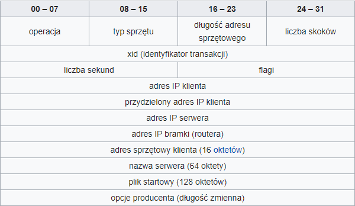
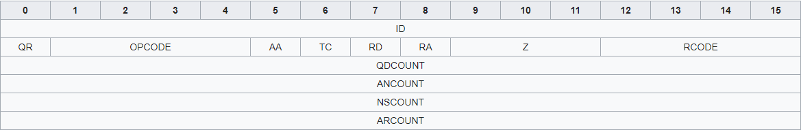
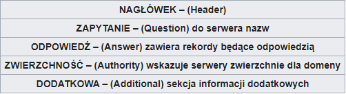

DHCP - (dynamic host configuration protocol) umożliwia dynamiczne przydzielanie adresów oraz innych elementów konfiguracji (bramka, maska).
Serwer DHCP dysponuje pewną pulą adresów, które przydziela zgłaszającym się do niego komputerom.
Technologia ta stosowana jest w przypadku gdy mamy wiele komputerów pracujących niejednocześnie Częściej jednak dynamiczne przydzielanie adresów wykorzystywane jest razem z translacją
adresów co pozwala na dostęp do Internetu całym podsieciom, dzielącym jeden numer IP.
przydziela klientowi odpowiednią konfigurację sieci.
Klient otrzymuje taką konfigurację i dzierżawi ją przez pewien zdefiniowany czas (czas dzierżawy).
Serwer DHCP może przydzielić klientowi np.: adres IP, maskę podsieci, adres IP bramy (gateway), serwera / ów DNS, nazwę domeny oraz ew. inne opcje konfiguracyjne.
Nie musimy „manualnie” konfigurować ustawień karty sieciowej każdego urządzenia w sieci ponieważ zrobi to za nas serwer DHCP.
DHCP - określenie edycji nagłówka DHCP

Operacja :
Typ nagłówka. 1 = BOOTREQUEST, 2 = BOOTREPLY
Typ sprzętu :
Liczba z zakresu 1-28 oznaczająca typ sprzętu (karty sieciowej). Dla sieci ethernetowej przyjmuje wartość 1.
Długość adresu sprzętowego :
Oznaczenie długości używanego adresu sprzętowego np. 6 dla Ethernetu 10 Mbps.
Liczba skoków :
Pole jest opcjonalne. Zlicza liczbę pośrednich routerów biorących udział w transmisji pakietu.
Identyfikator transakcji :
Wybierany losowo przez klienta identyfikator (w sytuacji, gdy serwer nie będzie w stanie "zrozumieć" adresu sprzętowego klienta. Wyśle odpowiedź na broadcast, a xid będzie jedynym sposobem rozpoznania odpowiedzi kierowanej do klienta).
Liczba sekund :
Mierzony w sekundach czas, jaki upłynął od momentu pierwszego wysłania przez klienta wiadomości typu BOOTREQUEST.
Flagi :
W tej chwili używany tylko 1 bit (BROADCAST flag). Pozostałe 15 bitów jest zarezerwowane na zastosowanie w przyszłości.
Adres IP klienta :
Pole nieobowiązkowe. Wypełniane w przypadku np. odświeżania adresu.
Przydzielony adres IP klienta :
Trzy możliwości przydzielania adresu: ręcznie (na podstawie MAC), automatycznie (kolejność zgłaszania) i dynamicznie (tylko na pewien okres).
Adres IP serwera :
Ustawiane przez serwer.
Adres IP bramki :
Ustawiane przez serwer.
Adres sprzętowy klienta :
Adres MAC klienta.
Nazwa serwera :
Pole opcjonalne. Nazwa hosta serwera.
Plik startowy :
Używany w mechanizmie ciasteczek (Magic Cookie).
Opcje :
Zestaw ponumerowanych opcji 0-254. np.
DHCP option 50: 192.168.1.100 requested
Klient prosi serwer o przydzielenie danego adresu IP.
Przydzielanie adresów :
Protokół DHCP opisuje trzy techniki przydzielania adresów IP:
- przydzielanie ręczne oparte na tablicy adresów MAC oraz odpowiednich dla nich adresów IP.
Jest ona tworzona przez administratora serwera DHCP. W takiej sytuacji prawo do pracy w sieci mają tylko komputery zarejestrowane wcześniej przez obsługę systemu.
- przydzielanie automatyczne, gdzie wolne adresy IP z zakresu ustalonego przez administratora są przydzielane kolejnym zgłaszającym się po nie klientom.
- przydzielanie dynamiczne, pozwalające na ponowne użycie adresów IP. Administrator sieci nadaje zakres adresów IP do rozdzielenia. Wszyscy klienci mają tak skonfigurowane interfejsy sieciowe, że po starcie systemu automatycznie pobierają swoje adresy. Każdy adres przydzielany jest na pewien czas.
Taka konfiguracja powoduje, że zwykły użytkownik ma ułatwioną pracę z siecią.
Parametry konfiguracji przekazywane do klienta. Serwer DHCP może dostarczać swoim klientom dodatkowe dane pozwalające na konfigurację sieci.
Niektóre z dodatkowych opcji :
- adres IP serwera DNS
- nazwa DNS
- adres IP bramy sieciowej (ang. gateway)
- adres broadcast
- maska podsieci
- maksymalny czas oczekiwania na odpowiedź w protokole ARP
- wartość MTU (maksymalny rozmiar pakietu)
- adresy serwerów NIS
- domena NIS
- adres IP serwera SMTP
- adres serwera TFTP
- adres serwera nazw NetBIOS
- adres serwera WINS
Porty :
DHCP używa protokołu UDP. Wszystkie pakiety wysyłane przez klienta i pakiety wysyłane przez serwer mają
Port źródłowy 67 i Port docelowy 68.
W przypadku DHCPv6 dla adresów IPv6 klient wysyła zapytania na
Port docelowy 547, natomiast odpowiedzi z serwera są wysyłane na
Port źródłowy 546.
DNS (Domain Name System - system nazw domen) – hierarchiczny rozproszony system nazw sieciowych, który odpowiada na zapytania o nazwy domen.
Dzięki DNS nazwa mnemoniczna, np. www.google.pl jest tłumaczona na odpowiadający jej adres IP, czyli 216.58.215.68. DNS to złożony system komputerowy oraz prawny.
Zapewnia z jednej strony rejestrację nazw domen internetowych i ich powiązanie z numerami IP.
Z drugiej strony realizuje bieżącą obsługę komputerów odnajdujących adresy IP odpowiadające poszczególnym nazwom.
Jest nieodzowny do działania prawie wszystkich usług sieci Internet. Zapytania i odpowiedzi DNS są najczęściej transportowane w pakietach UDP.
Każdy komunikat musi się zawrzeć w jednym pakiecie UDP (standardowo 512 oktetów, ale wielkość tę można zmieniać pamiętając również o ustawieniu takiej samej wielkości w
MTU – Maximum Transmission Unit). W innym przypadku przesyłany jest protokołem TCP i poprzedzony dwubajtową wartością określającą długość zapytania i długość odpowiedzi
(bez wliczania tych dwóch bajtów).
Format komunikatu DNS :

Forma nagłówka, który określa rolę całego komunikatu
Sekcja nagłówka występuje zawsze. W sekcji zapytania zawsze znajduje się jedno zapytanie zawierające nazwę domenową, żądany typ danych i klasę (IN).
Sekcja odpowiedzi zawiera rekordy zasobów stanowiące odpowiedź na pytanie.

ID [16 bitów] (IDentifier) – identyfikator tworzony przez program wysyłający zapytanie; serwer przepisuje ten identyfikator do swojej odpowiedzi, dzięki czemu możliwe jest jednoznaczne powiązanie zapytania i odpowiedzi
QR [1 bit] (Query or Response) – określa, czy komunikat jest zapytaniem (0) czy odpowiedzią (1)
OPCODE [4 bity] – określa rodzaj zapytania wysyłanego od klienta, jest przypisywany przez serwer do odpowiedzi. Wartości:
- 0 – QUERY – standardowe zapytanie,
- 1 – IQUERY – zapytanie zwrotne,
- 2 – STATUS – pytanie o stan serwera,
- 3-15 – zarezerwowane do przyszłego użytku.
AA [1 bit] – (Authoritative Answer) – oznacza, że odpowiedź jest autorytatywna.
TC [1 bit] – (TrunCation) – oznacza, że odpowiedź nie zmieściła się w jednym pakiecie UDP i została obcięta.
RD [1 bit] – (Recursion Desired) – oznacza, że klient żąda rekurencji – pole to jest kopiowane do odpowiedzi
RA [1 bit] – (Recursion Available) – bit oznaczający, że serwer obsługuje zapytania rekurencyjne
Z [3 bity] – zarezerwowane do przyszłego wykorzystania. Pole powinno być wyzerowane.
RCODE [4 bity] – (Response CODE) kod odpowiedzi. Przyjmuje wartości:
- 0 – brak błędu,
- 1 – błąd formatu – serwer nie potrafił zinterpretować zapytania,
- 2 – błąd serwera – wewnętrzny błąd serwera,
- 3 – błąd nazwy – nazwa domenowa podana w zapytaniu nie istnieje,
- 4 – nie zaimplementowano – serwer nie obsługuje typu otrzymanego zapytania,
- 5 – odrzucono – serwer odmawia wykonania określonej operacji, np. transferu strefy,
- 6-15 – zarezerwowane do przyszłego użytku.
QDCOUNT [16 bitów] – określa liczbę wpisów w sekcji zapytania
ANCOUNT [16 bitów] – określa liczbę rekordów zasobów w sekcji odpowiedzi
NSCOUNT [16 bitów] – określa liczbę rekordów serwera w sekcji zwierzchności
ARCOUNT [16 bitów] – określa liczbę rekordów zasobów w sekcji dodatkowej
Nazwy Domen
Rozproszona baza danych DNS jest indeksowana nazwami domen, tworzącymi drzewiastą strukturę hierarchiczną. Węzły drzewa DNS posiadają etykiety tekstowe o długości od 1 do 63 znaków:
pusta etykieta o zerowej długości zarezerwowana jest dla węzła głównego. Etykiety węzłów oddzielone kropkami czytane w kierunku od węzła do korzenia drzewa tworzą pełną nazwę domenową.
Domena jest poddrzewem hierarchii nazw, obejmującym zbiór domen (subdomen) o wspólnym sufiksie, nazwanym tak jak węzeł na szczycie. Nazwy „hostów” są nazwami domen, do których przypisana jest informacja o konkretnych urządzeniach i zazwyczaj występują w liściach drzewa DNS (czyli nie mają swoich poddomen), ale ogólnie jedna nazwa może opisywać zarówno hosta, jak i całą domenę.
Przykładowe, wewnątrze domeny najwyższego poziomu .pl :
- regionalnych jak ‘opole.pl’, ‘dzierzoniow.pl’ czy ‘warmia.pl’,
- funkcjonalnych jak ‘com.pl’, ‘gov.pl’ czy ‘org.pl’,
- należących do firm, organizacji lub osób prywatnych jak ‘wikipedia.pl’, ‘zus.pl’.
Najważniejsze cechy systemu DNS:
- Nie ma jednej centralnej bazy danych adresów IP i nazw. Najważniejszych jest 13 głównych serwerów (klastrów) rozmieszczonych na wielu kontynentach.
- Serwery DNS przechowują dane tylko wybranych domen.
- Każda domena powinna mieć co najmniej 2 serwery DNS obsługujące ją, jeśli więc nawet któryś z nich będzie nieczynny, to drugi może przejąć jego zadanie.
- Każda domena posiada jeden główny dla niej serwer DNS (tzw. master), na którym to wprowadza się konfigurację tej domeny, wszystkie inne serwery obsługujące tę domenę są typu slave i dane dotyczące tej domeny pobierają automatycznie z jej serwera głównego po każdej zmianie zawartości domeny.
- Serwery DNS mogą przechowywać przez pewien czas odpowiedzi z innych serwerów (ang. caching), a więc proces zamiany nazw na adresy IP jest często krótszy niż w podanym przykładzie.
- Na dany adres IP może wskazywać wiele różnych nazw. Na przykład na adres IP 207.142.131.245 mogą wskazywać nazwy pl.wikipedia.org oraz de.wikipedia.org
- Czasami pod jedną nazwą może kryć się więcej niż 1 adres IP po to, aby jeśli jeden z nich zawiedzie, inny mógł spełnić jego rolę.
- Przy zmianie adresu IP komputera pełniącego funkcję serwera WWW, nie ma konieczności zmiany adresu internetowego strony, a jedynie poprawy wpisu w serwerze DNS obsługującym domenę.
- Protokół DNS posługuje się do komunikacji serwer-klient głównie protokołem UDP, serwer pracuje na porcie numer 53, przesyłanie domeny pomiędzy serwerami master i slave odbywa się protokołem TCP na porcie 53.
Typy rekordów DNS :
Najważniejsze typy rekordów DNS oraz ich znaczenie:
- Rekord Alub rekord adresu IPv4 (address record) mapuje nazwę domeny DNS na jej 32-bitowy adres IPv4.
- Rekord AAAA lub rekord adresu IPv6 (IPv6 address record) mapuje nazwę domeny DNS na jej 128-bitowy adres IPv6.
- Rekord CNAME lub rekord nazwy kanonicznej (canonical name record) ustanawia alias nazwy domeny. Wszystkie wpisy DNS oraz subdomeny są poprawne także dla aliasu.
- Rekord MX lub rekord wymiany poczty (mail exchange record) mapuje nazwę domeny DNS na nazwę serwera poczty oraz jego priorytet, który określa kolejność wraz ze wzrostem wartości.
- Rekord PTR lub rekord wskaźnika (pointer record) mapuje adres IPv4 lub IPv6 na nazwę kanoniczną hosta. Określenie rekordu PTR dla nazwy hosta (ang. hostname) w domenie in-addr.arpa (IPv4), bądź ip6.arpa (IPv6), który odpowiada adresowi IP, pozwala na implementację odwrotnej translacji adresów DNS (ang. reverse DNS lookup, revDNS).
- Rekord NS lub rekord serwera nazw (name server record) mapuje nazwę domenową na listę serwerów DNS dla tej domeny.
- Rekord SOA lub rekord adresu startowego uwierzytelnienia (start of authority record) ustala serwer DNS dostarczający autorytatywne informacje o domenie internetowej, łącznie z jej parametrami (np. TTL).
- Rekord SRV lub rekord usługi (service record) pozwala na zawarcie dodatkowych informacji dotyczących lokalizacji danej usługi, którą udostępnia serwer wskazywany przez adres DNS.
- Rekord TXT – rekord ten pozwala dołączyć dowolny tekst do rekordu DNS. Rekord ten może być użyty np. do implementacji specyfikacji Sender Policy Framework (SPF) lub do weryfikacji własności domeny przykładowo w usługach firmy Google.
- Inne typy rekordów dostarczają informacje o położeniu hosta (np. rekord LOC) lub o danych eksperymentalnych.